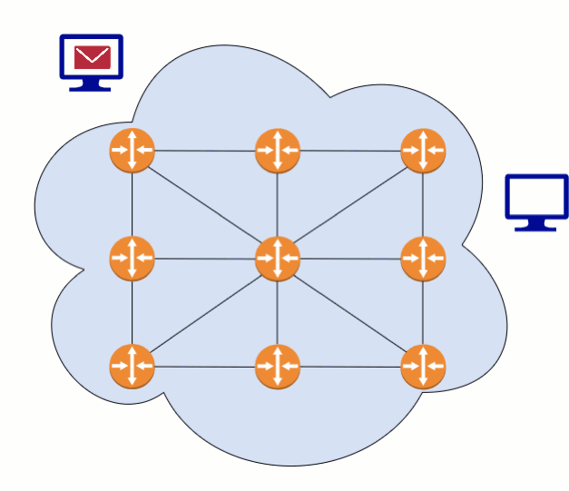
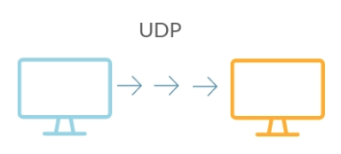
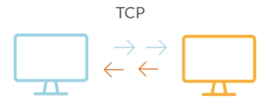

Lesson 7 - TCP Packets
At the end of this lesson, you will be able to:
- Explain the difference between TCP and UDP protocols.
- Describe the information needed to be included within a 'packet'.
Transport layer protocols
The next protocols we will examine are the Transport Layer Protocols (such as TCP or UDP). These protocols manage the breakdown of a message into packets to be transmitted by lower level protocols and also the reconstruction of the message from the packets upon arrival. Look at figure 2.10. Notice the order of the packets leaving the first computer. Does each packet take the same path? Do they arrive in the order sent?

We are going to learn about two new protocols, one for when speed is most important, and one when accuracy is most important.
User Datagram Protocol (UDP)
When the goal is to send information quickly without worrying about accuracy, we use User Datagram Protocol (UDP). It works by sending all the packets but doesn’t check if they all get through or arrive in the right order. This protocol is useful when split seconds matter more than correcting errors, like video-conferencing, live streaming, or online gaming.

Transmission Control Protocol (TCP)
When the goal is to send information accurately, we use Transmission Control Protocol (TCP). The sender and receiver must be sure that the entire message was successfully transmitted and reconstructed. This protocol is useful when accuracy matters more than saving a split second, like sending emails, photos, or just browsing websites.

TCP divides larger messages into smaller packets that have ordering information added to their header. When a packet arrives at a destination computer, an acknowledgment is sent to the sender, letting them know they don’t need to resend that packet. Once all the packets have arrived, the ordering information in the headers of the packets allows them to be reordered to create the original message.
Discussion prompt
You are now going to develop your own packet protocol!
 Complete on your own!
Complete on your own!
Open Unit 2 Lesson 7 - Packet Protocol and:
- Develop a protocol so the entire message can be sent where both the sender and receiver can be confident that the entire message was received!
Hi Sally! Do you want to meet for lunch?
- Guidelines:
- Each packet can only contain 8 ASCII characters of the message.
- The sender and receiver must be sure that the entire message was successfully transmitted and reconstructed.
- Think about what information will need to be included in each packet?
- In your post, explain everything you think will be needed to be put into each packet to successfully send the message above.
- Between the 4 people in your group, determine the 'best' protocol, which could be a combination of different posts.
You must post before you can see the other people in your group!
Check for understanding!
In the next lesson, we will learn about the DNS, a large dictionary for mapping URLs (for example, www.pcc.edu) and IP addresses.